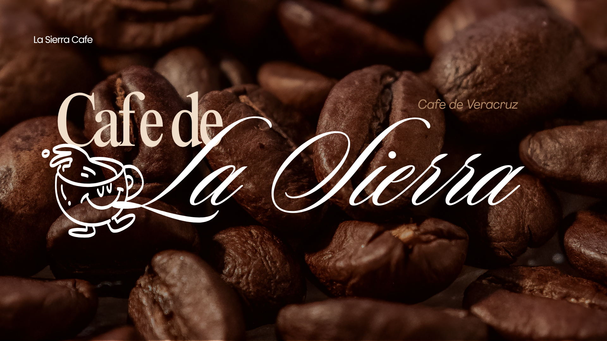
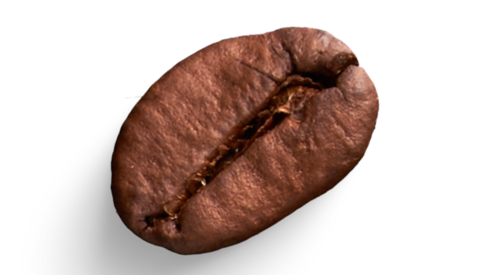
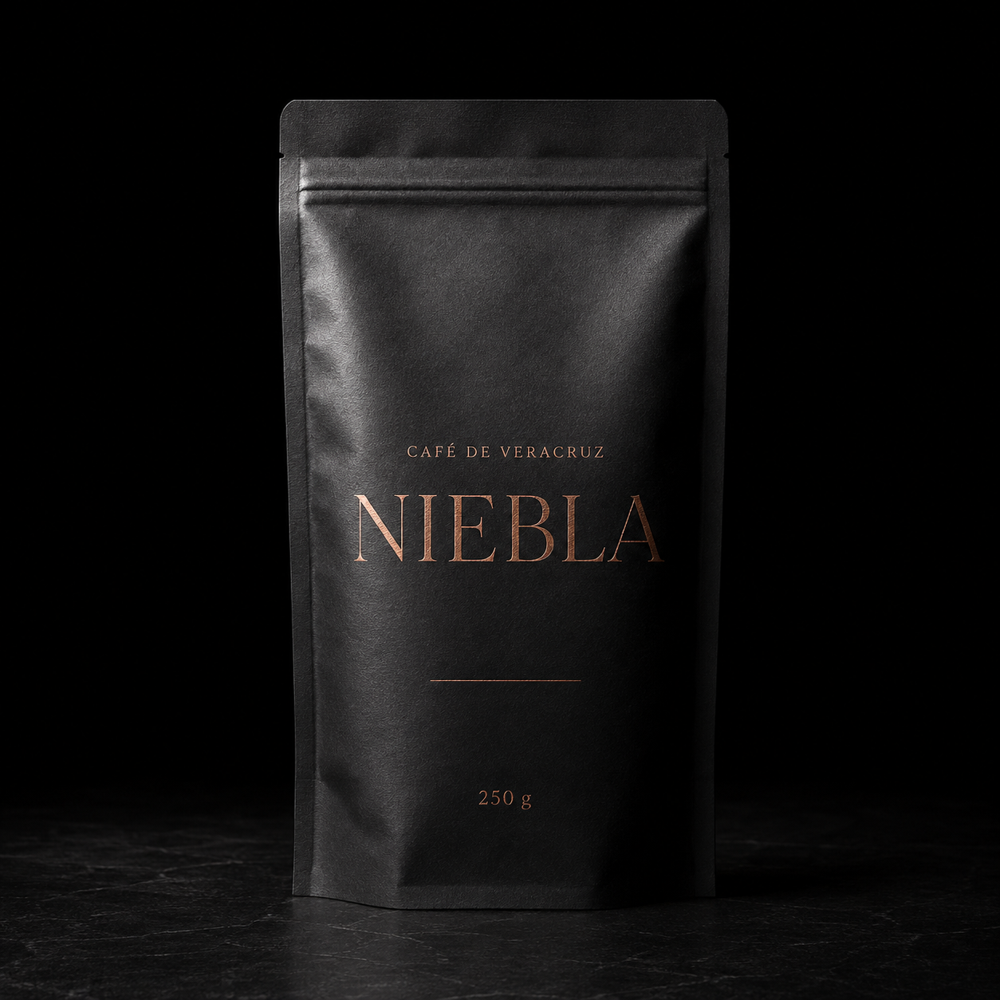
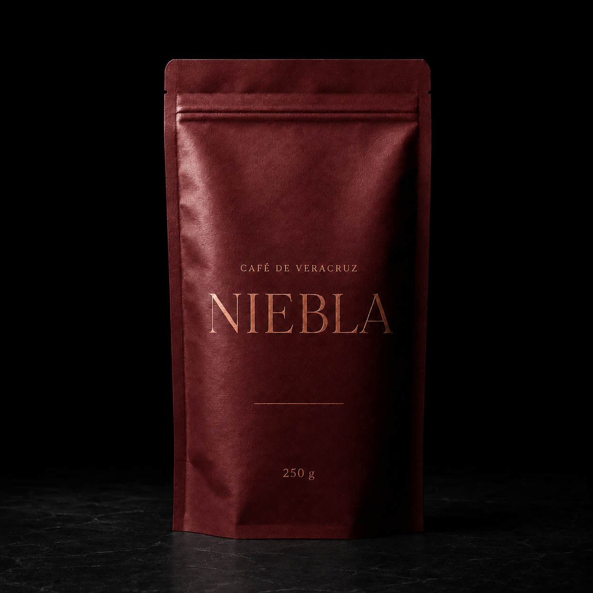
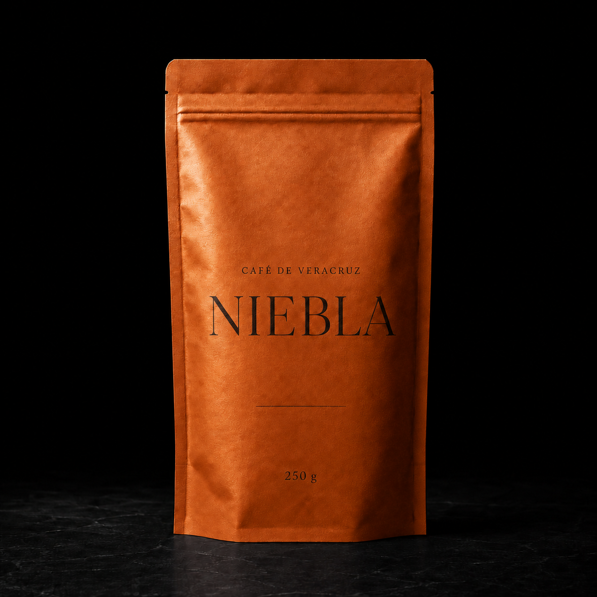
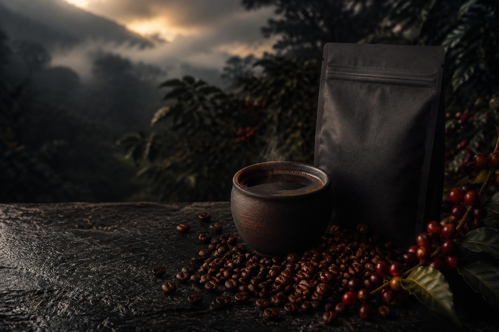

EL ORIGEN DEL GRANO
En las montañas de Coatepec,
cada grano madura lentamente
entre niebla, altura y tierra fértil.

EL CORAZÓN DE VERACRUZ
En las montañas de Coatepec,
cada grano madura lentamente
entre niebla, altura y tierra fértil.
Calidad

Veracruz
Un tueste cuidadoso revela notas
de cacao, piloncillo y naranja,
con un final limpio y aromático.
GRANO ENTERO · 250 G

250 MXN
CACAO · PILONCILLO · NARANJA

250 MXN
CACAO · PILONCILLO · NARANJA

250 MXN
CACAO · PILONCILLO · NARANJA
Suelo volcánico.
Entre los 1,200 y 1,600 metros, la cereza madura más
despacio. Ese tiempo se convierte en dulzor, aroma y
una taza con identidad propia.
